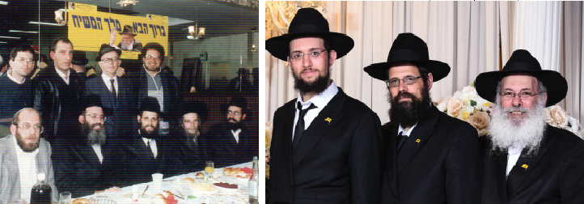

מאות רבות של חסידים ואנשי מעשה הלכו בדומיית כאב אחר מיטתו של שליח הרבי בבת ים, ח
מאות רבות של חסידים ואנשי מעשה הלכו בדומיית כאב אחר מיטתו של שליח הרבי בבת ים, חלוץ האמונה בגאולה ובגואל; האיש שעמד על משמר המערכה במשך שנים ארוכות הרה”ח הרב זמרוני זליג ציק. הרב ציק נפטר לאחר כחודשיים בהם נאבק על חייו בבית הרפואה.

הלווייתו יצאה מבית חב”ד במרכז העיר בת ים, המקום אותו הקים והחזיק במשך עשרות שנים, שם הספידו בקול בוכים הרב בר–שלום, רבה של בת ים, ולאחר מכן המשיכה לבניין 770 בכפר חב”ד, בדיוק במקום בו העמיד אך לאחרונה חופה של זוג מקורבי בית חב”ד בעירו, ומשם ל’בית החיים’ ביישוב ‘אחיעזר’ הסמוך לכפר חב”ד.
‘נגיעות’ ראשונות עם חב”ד
הרב זמרוני ציק נולד בחולון בשנת תש”ח למשפחה מסורתית.
הקשר הראשון שלו עם חב”ד החל כבר בילדותו, כאשר הוריו חיפשו קייטנה דתית עבורו. לבסוף שלחו אותו לכפר חב”ד, שם בילה את שבועות הקיץ. מכל חוויות הקייטנה, זכר כל חייו את “טקס ההשבעה” שהרב צבי גרינוולד ערך עמם בפרדס באחד הלילות. “הושבענו לשמור אמונים להחלטה להיות ‘חיילי בית דוד’”, סיפר הרב זמרוני לימים. “הטקס השפיע עלי מאוד, ולמרות השנים שעברו מאז הוא חרות בי ומשפיע עד היום”.
בנעוריו החל ללמוד בישיבה התיכונית ‘נחלים’. למרות המסגרת התורנית, לא מצא שם את אשר איוותה נפשו. ואם לומר את האמת לא הזדהה שם באופן מלא עם התוכן והמסגרת. היא לא היה דתי בנפשו, רק בחיצוניותו.
בגיל שמונה עשרה התגייס לצבא, שם שירת בחזית המצרית של מלחמת “ששת הימים”. יחד עם חבריו נשלח לאל עריש ובהמשך אף ירדו לתעלה ואף חצו אותה.
ה’נגיעה’ השניה שלו עם חב”ד הייתה בדיוק שם, בסיני, כאשר נפגש עם הרב אהרן טננבוים מכפר חב”ד, ששירת כאיש מילואים. ההתעוררות של מלחמת ששת הימים תפסה גם את לבו של זמרוני החייל. “חנינו אז ליד התעלה והיה לנו שפע של זמן לשיחות. באחת מהן הזמין אותי לשבת בכפר חב”ד”, הוא נזכר. הוא שבת בכפר חב”ד ונכנס לראות את הישיבה המרכזית בכפר. לימוד החסידות תפס אותו מיד. בחורי הישיבה הקסימו אותו ברעיונות החסידות ובדרכי הנועם שלהם. השבת הראשונה גררה בעקבותיה עוד שבת שגרמו לו להתקרב לחב”ד ביתר שאת.
כל אותו זמן המשיך את שירותו הצבאי במסגרת השירות הסדיר. בשבתות בהן התאפשר לו, היה מגיע לשבות בכפר חב”ד. בינתיים גילה במחלקה שלו עוד בחור חב”די שנשא אתו תמיד חת”ת בכיסי המדים. השניים שמחו זה בזה והחלו ללמוד בזמנם הפנוי שיחות של הרבי.
כשנה לאחר מלחמת ששת הימים, בא בברית הנישואין עם רעייתו תבלח”א. כיוון שכבר הרגיש חלק מחב”ד, החל לגדל זקן. הוא ורעייתו, חיפשו מקום עם צביון דתי לגור בו, והשניים החליטו לגור בבני ברק. “למרות שהייתי מרבה לכתוב לרבי שליט”א, מעולם לא קיבלתי תשובה, ובכל זאת קיבלתי בעקיפין חיזוק להחלטה. ידידי הרב אהרן טננבוים ידע על התלבטויותיי, וכשהיה ב’יחידות’, שאל את הרבי מלך המשיח אם להשפיע עלי לעבור לכפר חב”ד, והרבי ענה לו ‘מכיוון שהוא התקרב זה עתה וגם זוגתו התקרבה, המעבר מהעיר לכפר עלול לפעול שבירה, ולכן לא כדאי להשפיע בכיוון זה’.
“היום אני יודע עד כמה הרבי ראה למרחוק. אילו עברנו ישר לכפר־חב”ד לא היינו מסתדרים שם כמו בבני ברק. עבורי היתה זו הוכחה בדרך הטבע שהרבי לא צריך לכתוב לי, ומכיר אותי היטב גם כך”.
באותה תקופה החל הרב זמרוני ללמוד חסידות בשיטתיות עם הרב מאיר בליז׳ינסקי מרמת גן הסמוכה. השניים נפגשו פעמיים בשבוע, והרב בליז’ינסקי שהיה בר–דעת מופלא בחסידות, העניק לו את רעיונות החסידות הבסיסיים תוך כדי לימוד תניא בחברותא. מאז נוצר בין השניים קשר נפשי עמוק.
בתום שירותו הצבאי, בשנת תשכ”ט, הזמינו הרב יוסף בא–גד, ראש ישיבת ‘נחלים’, לשמש כמדריך רוחני בישיבה בה למד זמרוני בעבר הלא–רחוק. ציק הסכים לא לפני שקיבלת את הסכמתו וברכתו של הרבי.
לא חסיד כר’ זמרוני יישב על שמריו. הוא החל להחדיר מושגים חסידיים בבחורי הישיבה, לקח אותם להתוועדות ולפעילויות של ‘מבצעים’, והחדיר בהם את רגש ההתקשרות לרבי ואהבה לחסידות. הוא קירב שם ליהדות בחורים רבים שכיום הנם בעלי משפחות ברוכות בחב”ד. ביניהם: ר׳ יצחק הולצמן, ר׳ משה דיקשטיין, ר’ שמעון נוימן, ר׳ מנחם קליימן ואחרים. “התלמידים היו באים אלי הביתה ללמוד חסידות ולהשתתף בהתוועדויות. התוועדויות אלה גררו הליכה למקווה ומכתבים לרבי. מכאן הדרך נפתחה להשתתפות במבצעים וכל השאר”, סיפר הרב זמרוני. “היינו הולכים ל’מבצעים’ בעיקר בבית הרפואה ביילינסון בפ”ת. הדבר היה חידוש עצום עבורם - חבר’ה עם כיפות סרוגות עומדים ומניחים תפילין לאנשים. אפילו אני התרגשתי כשראיתי אותם עושים את זה”.
על אחד הדו”חות ששלח לרבי, הגיעה מכתב תשובה לכתובת “צא”ח נחלים”…
הרב זמרוני סיפר לימים, כי מתחילת התקרבותו לחב”ד, כתב לרבי מכתבים רבים בענייניו האישיים ולא זכה לאף תשובה. העדר התשובות דכדך אותו מאוד. אחד מאנ”ש ששם לב לכך, אמר לו: הרבי הוא הרמטכ”ל וחייל צריך לכתוב ולדווח לו גם כשאין מענה. הסבר זה נתן לו דחיפה להמשיך לכתוב דו”חות למרות שלא היו תשובות.
העבודה עם הבחורים ב’נחלים’ וקירובם לחסידות, עוררו עליו את זעמם של ההורים, והנהלת הישיבה נאלצה לפטרו מתפקידו כמדריך. “הרב מאיר בליז’ינסקי טען שאני פועל בקיצוניות, אבל אני חשבתי אחרת; אם אצליח מבחינה חב”דית, הישיבה תלחץ עלי שאעזוב. אבל אם אהיה מתון - מה יצא מזה שאעבוד שם? הלכתי בקו של ‘לכתחילה אריבער’”.
‘יחידות’ ראשונה: מתקשר ומתבטל לפניו כמשיח
באותה תקופה שכנע אותו ידידו הרב דוד נחשון שי’, לנסוע לרבי. כיוון שהרב זמרוני היה ללא עבודה, החליט אפוא לנסוע לרבי.
היה זה בחודש אייר תש”ל. בביקור זה שהה ב־770 קרוב לחודשיים ימים, כאשר את רוב זמנו הקדיש ללימוד מאסיבי של חסידות. “השיחות והמאמרים קישרו אותי מאוד אל הרבי ונהפכתי להיות חסיד לכל דבר”, סיפר.
כשהגיע לרבי, ביקש לעבוד בעבודה מזדמנת כדי לממן את הוצאות הנסיעה. התשובה של הרבי הפליאה אותו: “יעשה כעצת הנהלת הישיבה”. תשובות מעין אלה היו מקבלים תלמידי הישיבה, ולא אברכים לאחר נישואיהם… הנהלת הישיבה התכנסה אפוא לדיון במצב המוזר, וזו החליטה פה אחד שעליו לשבת וללמוד.
זו הייתה תקופה מלאת רגש עבור הרב ציק. “עשיתי מאמצים לראות את הרבי בתפילות פעמים רבות ככל האפשר. הייתי מביט בכל תנועה שלו ומתרשם עמוקות. הדבר שהרשים אותי במיוחד היתה הנחרצות של הרבי בכל תנועה ותנועה אף תנועה לא היתה מיותרת”.
ואז הגיעה ה’יחידות’ הראשונה אצל הרבי מלך המשיח. זה לא היה קל שכן המזכירות עכבה אותו זמן רב, וכשכבר לא יכול היה לעמוד בהמתנה הממושכת, העז וכתב לרבי וביקש להיכנס ל’יחידות’. הוא הוסיף, כי אם אין מקום בזמן שנקבע ליחידות, הוא מבקש שהרבי יקבל אותו אפילו בזמן שלא נקבע לקבלת יחידות. תשובת הרבי הייתה מיוחדת. הרבי הקיף בעיגול את המילים “אפילו בזמן שלא נקבע לקבלת יחידות” וכתב “הזמן הזה אינו מסוגל לזה, ומה יועילנו?” או אז הבין שזמן היחידות הוא עת רצון, זמן מיוחד ש”מסוגל לזה”.
הרב ציק שקיבל הדרכה קודם היחידות על ידי משפיעים, התכונן לה ברצינות רבה. המשפיע ר’ מענדל פוטרפס הסביר לו שיחידות היא התגלות אלוקות על ידי צדיקים, ובהתאם לכך התכונן.
כמה שעות לפני הכניסה ליחידות, הגיע אליו בחור מהישיבה, ודיבר עם הרב זמרוני על האמונה ברבי כמשיח. “עד אז אמנם ידעתי שהרבי מוליך אותנו לקראת הגאולה, אך לא היה ברור לי שמדובר ברבי כמשיח”, סיפר הרב ציק לימים…
כנהוג בקרב הנכנסים ליחידות, כדי לחסוך מזמנו היקר של הרבי ב’יחידות’, היה מקובל להכניס מראש את כל השאלות. הרב זמרוני אכן הכין רשימה ארוכה של שאלות שהשתרעה על כמה דפים, בעיקר בנושא קירוב בני נוער ליהדות, והכניס את רשימת השאלות לרבי דרך המזכירות. לאחר שאותו בחור ‘הסביר מחדש’ את עניין משיח, הוא אמר לעצמו שהגישה שלו צריכה להיות אחרת. “על דעת עצמי כתבתי מיד דף נוסף, והוספתי כי מאחר שהרבי הוא משיח, הרי אני מתקשר ומתבטל לפניו כמשיח, ומבקש ברכה”.
כבר בתחילת ה’יחידות’ הרבי שאל באיזו שפה לדבר, והרב ציק השיב שבאידיש קצת קשה לו, והרבי החל לדבר בעברית. כשהביט בדף הנוסף העיר “הרי כבר כתבת”.
“הבחנתי שכל הדפים הקודמים מונחים על שולחנו של הרבי. הרבי עיין בדף, מתח קווים והתייחס בסבר פנים רציני לדברים שכתבתי. הוא נתן ברכה כללית ואחר החל לענות על כל שאלה לחוד. היה מדהים לראות איך הרבי עובר ברפרוף מהיר על כל הדפים תוך כמה שניות, מקפל אותם ומתחיל לענות לי בפנים מאירות על כל שאלה ושאלה. היחידות ארכה קרוב לחצי שעה - זמן רב.
“כשהרבי סיים לענות לי, ראיתי שלא התייחס לשני נושאים שהזכרתי ברשימת השאלות, ושאלתי אם אוכל לומר משהו”, הוסיף הרב זמרוני וסיפר. “כשקיבלתי אישור לכך, הזכרתי את שני הנושאים שהרבי לא התייחס אליהם. זו היתה הפעם היחידה שדיברתי אל הרבי ביוזמתי. באותו רגע מבטו של הרבי תפס אותי. הרבי נעץ בי מבט חודר - מין מבט כזה שאמר לי שהרבי רואה פה הכל ואין מה להסתיר. גם התשובות שנתן לי מיד על שתי השאלות הוכיחו לי שהרבי יודע בדיוק מי אני. יצאתי מהיחידות בהלם”.
לאחר ה’יחידות’ התוועד הרב זמרוני עם הבחורים ב–770 וחזר על תוכן דבריו של הרבי אליו. לגודל חרדתו התברר לו כי חלק מהתשובות של הרבי נשמטו מזכרונו. אחד הבחורים יעץ לו לכתוב לרבי כל מה שזכר מתשובותיו, ולסמן את הקטעים ששכח, עם בקשה שהרבי ישלים את החסר… ואכן, הרב ציק הכניס לרבי פתק עם הקטעים המסומנים, וכתב שאינו זוכר את כל התשובות. כשהפתק חזר, היו בו המשכי המשפטים שלא זכר…
בין השאר דיבר עם הרבי על כך שבמהלך שירותו הצבאי צבר חובות–של–צום רבים לאחר שנדר בהזדמנויות שונות שאם יצא בריא ושלם מאירוע פלוני, יצום. הצומות הצטברו ולבסוף כתב על כך לרבי ביחידות. הרבי ענה “מבואר בתניא שאין עניין בצומות”. ברגע ששמע את התשובה, חלפה בו מחשבה: אם כן, אולי לא צריך לצום בכלל… היחידות התקיימה בי”ג בתמוז והרב ציק וחשב שאולי לא לצום בי”ז בתמוז הקרוב, אך הרבי כמו קרא את מחשבתיו, ומיד המשיך “אלא אותם צומות שקבעו לנו חז”ל כגון י”ז בתמוז”… בנוגע לצומות שקיבל על עצמו, ציין הרבי: “יפדה אותם בצדקה”, וכאן הוסיף את הדרישה הקשה ביותר “ובתוספת יראת שמים”.
את הסיפור הזה חתם הרב זמרוני בחיוך: “אכן, קל יותר לצום ולתת צדקה מלהוסיף ביראת שמים”…
באותה יחידות קיבל הרב זמרוני עוד הוראה שכיוונה את גישתו בקירוב יהודים ליהדות. הרבי השיב לו כי עבודה זו צריכה להיות “בדרכי נועם”. “מאז ואילך המשכתי בקו הזה לאות כל הדרך - הפצת יהדות רק בדרכי נועם - ורק כך הצלחתי”. זה אכן היה מוטו שליווה אותו בחייו.
בין השאלות שהעלה ביחידות, היו גם שאלות שנשאלו בשם אחרים. אחד הבחורים מישיבת ‘נחלים’ ביקש לשאול, עד כמה יש להילחם על גידול זקן במשפחה ובישיבה. תשובת הרבי היתה “מה שאסור על פי שולחן ערוך - הרי אסור; ומה שמותר - יתייעץ במשפיע”.
ועוד אפיזודה מ’היחידות’: “הייתי מתופף להנאתי והשתוקקתי מאוד להמשיך בכך. בסיום היחידות שאלתי את הרבי אם אוכל להמשיך. הרבי ענה שאוכל לתופף באופן כשר בהופעות דתיות מותרות (תזמורות בכפר–חב”ד וכיוצא באלה); כלומר אפנה את אהבת התיפוף לאפיקים מותרים על־פי ההלכה. מעניין לציין שמאז אותה יחידות החשק לתופף ברח לי…”
בת ים והרב זמרוני - חד הם
כשאמרת בת ים, אמרת הרב זמרוני; וכשאמרת הרב זמרוני - אמרת בת ים. אי אפשר להפריד ביניהם. זה יותר מארבעים שנה מאז שהרב זמרוני פועל בעיר הגדולה שעל שפת הים, ומצודתו פרושה בכל העיר, והרבה יותר מכך.
מדירה צנועה בקרית באבוב בעיר, הוא הקים את בית חב”ד שלו, במשך השנים עבר–נדד ממקום למקום, ובכל פעם התרחב יותר ויותר. לוחות המודעות בעיר בימים אלה מספרים יותר מכל את האבל הגדול של תושבי העיר וקברניטיו על פטירתו.
“לאחר עבודה של שנים רבות, העיר בת־ים כבר מוכנה למשיח”, הצהיר הרב זמרוני ציק פעמים רבות. “ברור שאינני מסתפק בכך ואני טוען כביכול לקב”ה שהעיר כבר מוכנה למשיח, אבל לעצמי אני אומר: יש עוד הרבה עבודה”.
בשנות שליחותו חולל הרב זמרוני מהפכה של ממש בעיר. זכה לקשר אלפים לרבי מה”מ. הוא היה החלוץ שהשתמש בטנק המבצעים, בישיבה חב”דית לבעלי תשובה שהקים בעיר, במעטפות של פדיון כפרות, ובעוד הרבה גימיקים שכיום הם חלק בלתי נפרד מכל בית חב”ד בארץ.
כבר בהתחלה התגוררו בני הזוג ציק בקריית באבוב שבעיר, זאת לאחר שקיבל תשובה מהרבי שכיוון שלהורי רעייתו יש דירה בקריה, ויש בה כמה שומרי מצוות, עליהם לגור שם ולהוסיף בהפצת המעיינות.
באותה תקופה החל להדריך בישיבה התיכונית של בת ים, “אדרת”. גם שם, כמו ב’נחלים’, החל לקרב את הצעירים לחסידות, וגם שם פוטר לבסוף, לא לפני שהספיק לקרב שם כמה צעירים לחסידות, חלקם כיום ראשי משפחות גדולות ומכובדות בחב”ד… “עבדתי בצורה אינטנסיבית. מסרתי שם שיעורי תניא, ערכתי שיחות עם התלמידים בשבתות ובלילות עד כיבוי אורות. השתדלתי ללמד חסידות גם בבקרים לפני התפילות - עד שלבסוף התפטרו ממני”, סיפר הרב זמרוני בחיוך רחב.
אחרי “אדרת” עבר ללמד בבית ספר חב”ד בבת־ים. נאמן לשיטתו שהפעילות והעשיה מחברת את הנפשות אל הרעיון הגדול - גם בהיותו בבית הספר החל לקחת את הילדים לעשות ‘מבצעים’ במרכז העיר מדי יום שישי. “אני זוכר יום שישי אחד, קר מאוד עם רוח פרצים וגשם. אמרתי לעצמי שצריך להיות משוגע כדי לעמוד שם בקור הזה ועוד יותר משוגע כדי להסכים להפשיל שרוול להנחת התפילין, אן לא ויתרתי. אני עושה את שלי. עמדתי במקום הקבוע ופניתי לאנשים. מעניין שדווקא באותו יום שישי הניחו הרבה יותר ממספר המניחים בימי שישי אחרים. הדבר נתן לי חיזוק לפעול בשיטת ‘לכתחילה אריבער’”.
כיוון שהיה מופקד על חינוכם של התלמידים בכתה ו’, היה הרב זמרוני מעודד את התלמידים שלפני בר–מצווה ללכת בהפסקות אל חנויות באזור ולזכות בעלי עסקים בהנחת תפילין. כך היה מחדיר לילדים את הרעיון של ‘ופרצת’. גם פה השיטה עבדה. “כמה מהם קשורים לחב”ד עד היום”.
לאחר שנה, בית הספר נסגר בשל הזדקנות אוכלוסיית האזור, ושוב הרב זמרוני מצא את עצמו ללא עבודה מסודרת, אך לא לזמן רב.
בית חב”ד הראשון בארץ ישראל
בקיץ תשל”ד החליט יחד עם כמה מקורבים להקים ספריה. הכוונה הייתה להקים משהו במתכונת המוסד הקרוי היום “בית חב”ד” שיוקדש לחלוטין למטרה זו. אלא שבאותו זמן המושג ‘בית חב”ד’ עוד לא היה קיים והרב זמרוני לא ידע בדיוק איך ייראה הדבר. הוא זוכר בהחלט את רגע המפנה:
“הרמתי טלפון לרב חודקוב וביקשתי ברכה להקמת הספריה. הרב חודקוב שאל אותי מה אנו רוצים לעשות? שמעתי בטלפון את קולו של הרבי מאשר כל העת ועונה ‘כן’. הבנתי שהרבי על הקו השני. פירטתי שיהיו במקום שיעורי תורה ומכירת תשמישי קדושה וכן הלאה. כאן הוא שאל: ‘מה אתה מתכונן לעשות בקשר למבצעים’? עניתי שנפרסם את העניין. הוא שאל ‘האם מפרסמים ברעש גדול’? עניתי: ‘אם מכונית עם רמקול היא רעש גדול, זה מה שאנו עושים היום’. היתה לנו אז מכונית עם רמקול ופרסמנו באמצעותה את כל חמשת המבצעים שעבדנו עליהם. הרב חודקוב הבהיר ש’רעש גדול’ אין פירושו רמקולים אלא ‘א גרויסע שטורעם’. אין זו חכמה לעשות רעש ברמקול. החכמה היא לדאוג שהרעש אכן יגיע להרבה אנשים.
“אחר כך שאל מה עוד נפעל ‘בכיוון של רעש גדול’, והבנתי שהוא לוחץ עלי בכוונה שאענה משהו מסוים. ניסיתי להבין למה הכוונה, ואז עלה בדעתי שהרב חודקוב מתייחס לעובדה שעכשיו קיץ ועונת הקייטנות. עניתי לו: ‘אם כן, אעבור בכל הקייטנות ואפרסם בהן את חמשת המבצעים’. רק אז נרגע. הבנתי שהרבי - שהיה על הקו - הוא שהסכים לכך.
“מעניין שבשבת הבאה הרבי ביקש בשיחה שכולם יעברו בכל הקייטנות ויפרסמו שם את חמשת המבצעים.
“לאחר הברכות כתבתי לרבי שאנו מתחילים בפעולות לשכירת מקום בבת־ים להקמת בית חב”ד. ידעתי שאנו הולכים בעצם להקים את בית חב”ד הראשון בעולם”…
פריצת דרך בת–ימית
בית חב”ד הראשון בעולם עמד (ועודנו עומד) בלב העיר, ושיטות הפעולה שלו ותכניו היוו דגם למאות בתי חב”ד שהוקמו בכל קהילה יהודית על פני הגלובוס.
מה שמוכר היום כחלק מהשגרה, היה אז בגדר חידוש גדול. הרב זמרוני ואנשיו היו מפיצים בעיר עלונים עם מידע על בדיקת מזוזות, חלוקת קופות צדקה ושאר המבצעים. בכל עלון הופיעה הכתובת של בית חב”ד החדש, וכך התושבים שמעו על חב”ד והגיעו לבית חב”ד כדי לקבל עזרה בענייני קדושה. הוא גם השתמש רבות בעיתונות המקומית שפרגנה בכתבות אוהדות. רבים הגיעו להציץ ונשארו לבסוף ללמוד או לשמוע הרצאות בנושאי יהדות.
פעם, כשהתגבשה כבר קבוצה של לומדי תורה, הגיע יום אחד הרב ציק לבית חב”ד וראה פתאום שאין מספיק חבר’ה לשיעור. עבורו זה לא היה דבר מובן מאליו. הוא יצא אפוא לרחוב, בנחשוניות האופיינית לו, עצר אנשים שהלכו לתומם ברחוב, או מכוניות שחלפו, ואמר לנהגים שהם מוכרחים להיכנס לבית חב”ד. ככה התקיים השיעור… אחד מאלה שנתפסו ברחוב ו”הוכרחו” להיכנס, היה צעיר בשם אליהו שדמי שהיום מוכר כרב שדמי השליח ברעננה…
הרבי שאל: “איפה זמרוני?”
באלול תשל”ד נסע הרב ציק עם רעייתו לרבי. עבורו זו הייתה הפעם השנייה. ביום שהגיע - כ”ה באלול - התקיימה התוועדות. הרב זמרוני נכנס משדה התעופה ממש באמצע ההתוועדות ועמד בקצה ה’זאל’. בין השיחות הרבי התעניין האם הקבוצה שאמורה להגיע הערב כבר הגיעה, וכשנענה בחיוב שאל מי בקבוצה. אמרו כמה שמות אך שמו לב כי הרבי ממתין שיאמרו שם מסוים. ואז המזכיר אמר שגם זמרוני הגיע.
הרב זמרוני ציק זכר כל השנים את אותם רגעים נדירים: “כשאני לעצמי, לא ידעתי איך להראות שאני נמצא. ניסיתי לפלס לעצמי לדרך ולבסוף מישהו זיהה אותי ופינו לי דרך. כשהתקרבתי הרבי הביט בי ואמר: ‘איך קען אים נישט אויפן פנים, ער שיקט מיר הונדערטע צעטלעך’. [אני לא מכיר אותו בפנים, הוא שולח לי מאות פתקים]. הרבי התייחס לכך שבכל ביקור נהגתי לבקש מאנשים לכתוב אליו שכן חלק מתפקידי היה לקשר יהודים לרבי. כשהרבי שמע שהגעתי, הורה לי שאומר ‘לחיים’ על כוס גדולה ‘עבור כל הפתקים’.
“אחרי שקיימתי את הוראתו לומר ‘לחיים’ על כוס גדולה, אמר: ‘איני אחראי אם הוא לא ישכים מחר לסליחות’… היתה זו התוועדות מיוחדת מאוד; מלך בשדה…”
באותו חודש, זכה הרב זמרוני ציק לקירובים נוספים. “כזוכה בגורל זכיתי לעמוד ליד הרבי שליט”א בשעת התקיעות, אך לא ידעתי עד כמה הדבר מחייב. ביום הראשון של ראש השנה שמעתי שבמקום מסוים חסר תוקע. הרגשתי שאינני יכול להשאיר אותם כך, בלי תוקע, ויצאתי למלא את מקום התוקע למרות החמצת התקיעות של הרבי.
“למחרת שאל אותי אחד המזכירים היכן הייתי אמש בתקיעות? התברר שהרבי שאל מדוע לא הייתי אמש בתקיעות. שאלתי מה העניין, והמזכיר אמר שהזוכה בגורל צריך לעמוד על הבימה בעת התקיעות. מובן שלמחרת כבר עמדתי בצמוד לרבי בשעת התקיעות, ראיתי את המחזה הנפלא הזה מקרוב ושמעתי את הרבי מנגן את הניגון שלפני התקיעות”.
“התמסרתי במיוחד לקירוב עוד ועוד יהודים לחסידות”
לאחר שובו ארצה, הפעילות בבת ים הלכה והתרחבה למרות הקשיים שליוו תמיד את הפעילות.
הפעילות הרחבה עם צעירי בת ים, החלה כבר להנץ ניצנים ראשונים של ישיבה לבעלי תשובה. ואכן, בשנת תשל”ט הקים הרב זמרוני לראשונה ישיבה חב”דית לבעלי תשובה עם פנימייה. התלמידים היו צעירים בת–ימים שנאספו ברחוב והחלו להתקרב ליהדות עד שהפכו לבעלי תשובה. הם למדו מדי יום מאמרי חסידות, שמעו שיעורים מרבנים בנגלה ובחסידות. הרב זמרוני עצמו עסק בעיקר בהבאת התלמידים ובקירובם במסגרת שיעורים ראשוניים וקלילים.
כשנשאל פעם איך הוא מסביר את ההצלחה המיוחדת בקירוב בעלי תשובה? השיב בפשטות: “בעיקר בכוחו של הרבי שליט”א מלך המשיח”…
בראיון שהעניק לפני עשרים וחמש שנים ל”כפר חב”ד”, גילה קצת מההשקעה וההתמסרות שלו לזולת: “יש אנשים בעלי חושים מיוחדים לכתיבה, דיבור או השפעה. לי יש חוש התמסרות יומיומית לעבודה ואני יודע מנסיוני שכל מי שמתמסר - מצליח. יש מנהל בית חב”ד שמתמסר להקמת מבנים ומוסדות; אני התמסרתי במיוחד לקירוב עוד ועוד יהודים לחסידות. הדבר היה מונח בנפשי כהנחת יסוד מהרגע שהתקרבתי לחב”ד - שהעיקר הוא הבאת יהודים נוספים לחסידות.
עם הדגל בראש
פרק מיוחד בעבודתו השליחותית והציבורית של הרב זמרוני, היא הפצת בשורת הגאולה, וזאת בנוסף לפעילות השוטפת של בית חב”ד. השקיע את כל המרץ בענייני גאולה ומשיח ובהפצת בשורת הגאולה, בפרט לאחר ג’ תמוז, כאשר היה צריך לעמוד על המשמר ולחזק את האמונה שלא תדעך חלילה.
הרב ציק החזיק בעניין זהותו של הרבי כמלך המשיח, כבר כשנכנס ליחידות הראשונה שלו, כאמור. גם בנושא הזה הוא היה מהנחשונים: “עד שנת תשמ”א חב”ד לא פעלה בשום מקום בנושא משיח בצורה מיוחדת ובולטת. כולם הסתפקו בכך שאמרו כי החסידות תביא את הגאולה. משנת תשמ”א ואילך, הוצאנו את פעילות גאולה ומשיח ממש החוצה; התחלנו להדגיש את הכיוון. הדגשנו בכל ה’מבצעים’ שלנו שנועדו לקרב את הגאולה, והצפנו את העיר בשלטים ‘אנו רוצים משיח עכשיו’. המשכנו בכך באירועים ציבוריים גדולים באולמות, בערבי הסברה ובכינוסי ענק של ילדים”.
ההחלטה לצאת בפעילות מסיבית כוללת להפצת ענייני משיח, החלה רק בשנת תש”נ. כשפגש מקורב שהיה מטבעו ‘כלי קבלה’, הוסבר לו את ענייני הגאולה והצורך להתכונן לקראתה.
בשנת תנש”א הרבי פרסם את מדרש ילקוט שמעוני אודות השנה שמלך המשיח נגלה בה. הרב ציק שם לב שלא מדגישים במידה מספקת את הפצת ופרסום המדרש שהרבי הרעיש אודותיו, והחליט ללכת בגדול. הוא פרסם עלון עם ציטוט דברי הארגעה של הרבי על אודות מלחמת המפרץ. כשהכל היה מוכן, הוא שאל את הרבי האם לפרסם זאת. “זאת היתה תמיד הגישה שלי - קודם לעשות ורק אחר כך לקבל אישור”, סיפר בגילוי לב.
מבצע הגאולה קיבל תאוצה, ושיחת כ”ח ניסן תנש”א שבאה מיד לאחר מלחמת המפרץ, היתה בבחינת “הלחיצה על ההדק”. הטילו עליו להפיץ עלון בנושא משיח ולאחר קשיים מסוימים הקים בחודש סיוון תנש”א את העיתון “הגאולה האמיתית והשלמה”. המטרה הייתה להסב את תשומת לב הציבור לעובדה שאירועים ותופעות המתרחשים בעולם, קשורים בביאת המשיח.
“כשראינו שהרבי פירש את הפסקת מרוץ החימוש כסממן ימות המשיח, המשכנו ופירשנו כל אירוע עולמי כסממן ימות המשיח”, סיפר הרב זמרוני. כך גם אמר הרבי בהתוועדות כ’ מנ”א - שיש לקשר כל עניין בעולם לימות המשיח. זה היה האות בשבילי להתייחס לכל עניין בעולם כממד נוסף של ביאת משיח”.
חיזוק עצום לדרכו של הרב זמרוני היה כאשר הרבי יצא מחדרו הק’ לאוהל ובידו עותק של עיתון “הגאולה האמיתית והשלמה”. הייתה בכך משום אמירה פומבית לחשיבות שהרבי מייחס לעיתון, שבעיני רבים היה “מוקצן”. “תמיד ראיתי שדווקא אלה שהתקרבו ליהדות, מקבלים את העניין של משיח בפשטות”.
בכנס השלוחים תשנ”ב כתב הרב זמרוני לרבי, שהוא רואה שכל הדברים שנאמרו במדרש ‘ילקוט שמעוני’ התממשו, ומי שמפרסם את הדברים כרגע הוא מלך המשיח בעצמו; ואם כן, האם אפשר לפרסם שהרבי שליט”א מליובאוויטש הוא מלך המשיח? הרבי לא ענה על כך ישירות, אבל הוציא על כך מענה “כמבואר בארוכה לפי ערך בהתוועדות דשבת קודש זו. אזכיר על הציון”. באותה התוועדות נאמר שיש לפרסם על הגעת המשיח ‘לו עצמו, למשפחתו ולסביבתו, וכשידברו בדברים היוצאים מן הלב - הדברים ייכנסו אל הלב’. “ואמנם”, מטעים הרב זמרוני, “מנסיוני ראיתי שככה זה עובד”…
נסיונו הרב בהפצת בשורת הגאולה והיחלצותו חושים עודדו את ראשי “כינוס השלוחים” העולמי בשנת תשנ”ג להזמינו לשאת דברים לפני אלפי השלוחים מכל רחבי העולם, ולהתוות בפניהם את הדרך הראויה. נאומו נשמע בקשב רב והתקבל בתשואות על ידי השלוחים כולם.
חלוץ בראש מחנה האמונה
לאחר ג’ תמוז, כאשר היה מקום להתרופפות האמונה העזה שפיעמה בקרב חסידי חב”ד כולם בזהותו של הרבי כמלך המשיח, נחלץ הרב זמרוני ציק חושים ופתח בסדרה של פעולות כדי שלא לתת לאמונה חלילה להיחלש. הוא יזם סדרה של כינוסי ענק בהם השתתפו אלפים ורבבות, הקים את “שיחת הגאולה” אותה כתב בעצמו מדי שבוע, ויזם שורה של פעילויות לאורך השנים כדי לחזק את האמונה כי הנה הנה הרבי מלך המשיח מתגלה. הוא עשה הכול - אפשר לומר שמסר את חייו - כדי לא לתת חלילה לייאוש ולספקנות לחלחל ללבבות. הרב זמרוני עמד בפרץ והשקיע את מיטב כוחותיו ומרצו, וכספים לרוב, כדי שלא לתת לעניין הגאולה לרדת מסדר היום.
פעולותיו אלו קוממו עליו רבים, כל אחד מסיבותיו, אך הוא ידע כי למרות כל מה שנראה בעיני בשר, אסור שחלילה האמונה בדברי הרבי מה”מ תיחלש או תתרופף. רבים חלקו עליו ועל דרכו וגישתו, אך הוא היה איתן בדעתו ולא זז ממנה כמלוא נימה. הוא חזר ואמר כי בכך הוא נצמד לדברי הרבי, גם אם המציאות לא תמיד נראית לנו חופפת.
בסיום הראיון עמו ב”כפר חב”ד” לפני חצי יובל שנים, הוסיף הרב זמרוני ציק דברים כה אופייניים: “אין לנו ברירה אלא לפעול בכל הכוחות. אנשי הדור הזה שרויים בתרדמה עמוקה ואני מנסה לעורר אותם. לא אכפת לי שתוקפים אותי, ובלבד שעוד יהודי יתקרב ליהדות. שיטתי היתה תמיד להשתמש בכל הדרכים האפשריות לקירוב יהודים ליהדות בתנאי שתהיינה מותאמות להלכה - אפילו אם נחשבו ללא–מקובלות. חולקים על אופי המסר שלי בעניין משיח, אך איני מתפעל. אני כבר רגיל לשמוע אנשים צועקים עלי. צעקו עלי למשל שאני משתמש לפרסום בענייני יהדות ביהודי שמחלל שבת, אבל כל האמצעים כשרים ולא עשיתי דבר בלי לדווח לרבי. הרבי מעולם לא אמר שפעולה מסוימת שלנו חריגה ואין לה מקום. זו בעצם השיטה של הרבי - להשתמש בכל דרך אפשרית, ואפילו ייחודית, להפצת יהדות”.
“ממנו אני מפחד…”
סיפור מופלא ו’מרעיש’, מספר הרב מנחם והבה:
באחת ההתוועדויות בבית הכנסת אצלי, הזמינו אותו בעלי השמחה להשתתף, והגיעו אורחים מכל העיר. אחד האורחים היה יהודי בשם ישראל. הלה נראה לא כל כך בריא בנפשו, לכאורה. היו שצחקו איתו או ממנו. הרב זמרוני היסה אותם ואמר “מישראל אני מפחד”.
ואז הוא גולל סיפור מדהים: היהודי הנ”ל הגיע אליו בהיותו בחור צעיר לפני כשלושים שנה לבית חב”ד וביקש להניח תפילין. מאחר שבמבט ראשון הוא היה נראה שאינו בריא בנפשו, אז התחמק ואמר שאין לו תפילין עכשיו. למחרת הוא חזר וביקש שוב להניח ושוב הרב זמרוני התחמק, והוא לא חזר עוד למחרת.
“לא עברו ימים מעטים” - סיפר הרב ציק - “וקיבלתי מכתב מהרבי על כמה עניינים ששאלתי, אלא שאז הופתעתי לראות סעיף בו הרבי כותב ‘מצורף בזה קטע ממכתב ששלח לי אחד מבני עירו ובוודאי יסדרו את הענין על הצד הטוב ביותר’. לצד המכתב הגיע גזיר מכתב של אותו ישראל שהתלונן אצל הרבי שהגיע לבית חב”ד בבת ים ולא נתנו לו להניח תפילין!…
“בהיותי בהלם ובעודי מנסה לעכל את הענין, והנה אני מקבל טלפון מהרב בנימין קליין שהרבי שואל אם הענין סודר? בו במקום סדרתי שלאותו ישראל יהיו תפילין רש”י ור”ת, ומאז ועד היום הנ”ל מתפלל קבוע בבית חב”ד ומשתתף במבצעים כפי יכולתו.
• • •
עוד מספר הרב מנחם והבה: “הרב זמרוני זכה לקרב רבים–רבים מבני עירו. כאשר בתחילת שליחותו חרש את העיר בית אחר בית תמיד כשהיה כותב עם יהודים לרבי היה מדריך אותם להתכונן היטב, ליטול ידיים ולקבל החלטה טובה וכו’. יום אחד הגיע למשפחה שהיה קצת קשה לשכנע אותם לכתוב לרבי והוא החליט שיכתבו בלי שום הכנות. הסדר היה שהרבי היה מחזיר את המכתבים לאותם אנשים דרכו, ותמיד היה כותב לו תארים חשובים “הרה”ח וו”ח אי”א נו”נ וכו’”, ואילו באותה הפעם התואר היה “מר זמרוני”…
(סיפורים ועדויות מרגשות על חייו ופועלו של הרב זמרוני, בכתבה נפרדת בגליון זה)